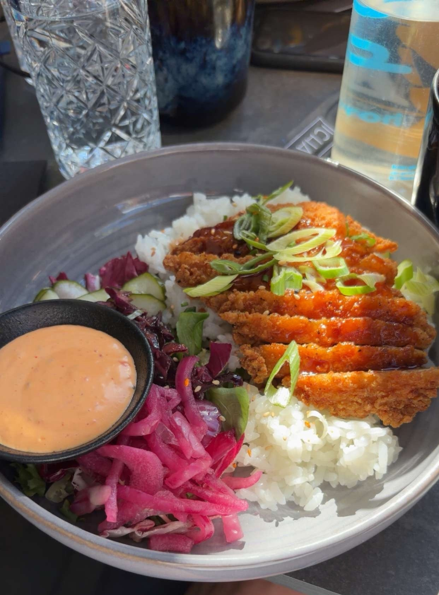

We started this day with a final lecture where the winners were announced. The winning team was called Godslayers, they got a sweater of the university as their price. We also received feedback on the challenges, reflected on how the project went within our group, and the teachers planned to give us some answers for the harder challenges… although in the end, they didn’t really give us any of the answers.
Since this didn’t take very long, we decided to go for a nice walk through the city. It was relaxing to just enjoy the atmosphere one last time.
Eventually we got hungry, so we went back to our favourite restaurant, a really nice Chinese place with delicious food. We went with a big group, which made it even more fun.

After eating, we returned to the hostel. I stayed there to try and get some schoolwork done, while the others went to a park to chill for a while.
In the evening, I headed to the station and took the train towards the airport. Some of the others stayed another day because they expected the final lecture to take longer, so they planned to leave on Saturday instead.
The rest of the group went into the city for a drink to enjoy their last night together in Skövde.